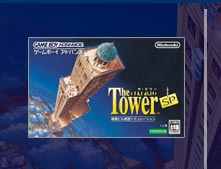
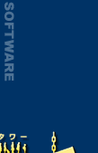
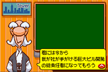

|  |
ゲームボーイアドバンスソフト
発売日：2005年4月28日
希望小売価格：4,800円(税込)
ジャンル：高層ビル経営シミュレーション
プレイ人数：１人
|
|
 |
| |
|
|
PCシミュレーションゲームの金字塔、『The Tower』がゲームボーイアドバンスソフトとして帰ってきた！ プレイヤーは、経営者の視点でビルの住人やお客様のニーズに応えながら、立派なビルに拡張するのが目的。淡々とこなしていくうち、自分のなかにある色々な部分が刺激され、人それぞれで違った遊び方ができる不思議で面白いゲームです。 |
|
|
まずはビルオーナーである『山爺』から”総合オフィスビル”の経営を任されます。初期の資金は１億5000万円。とんでもない大金のようでも、あっという間にスッカラカンになるのが悲しい…。
そう、ビル経営には常に常に大金がかかっているのです。庶民の生活レベルで考えちゃいけません。
ロビーを拡張し、エレベーターを設置し、さらにオフィスを作っていきます。賃料収入がないと拡張もできないから、まずはオフィス。とにかくオフィス。オフィスの他には警備員室・清掃室・トイレなど。
順調に設置が進んだら、今度はオフィス職員のために飲食店などを設置します。最初は焦ってやたらめったら設置したくなってしまいますが、手持ちの資金を計算しつつ…維持費がかかるのを忘れないようにしないと、あっという間にマイナス収支に！
|
数年が経過すると、設置できるアイテムの種類が増え、ホテルや住宅なども使用可能に。また集客を考えて地下鉄を引いたり、映画館を作ったりしているうちに、総合ビルの名にふさわしい様相を呈してきます。どこにどのアイテムを設置するかで集客率なども変化するため、ウンウン唸って考えながらのプレイになります。
またビルの住人には、名前をつけて行動を観察することが可能。レストランに行っては「旨いものを食べた」とか、エレベーター待ちでイライラしていたり、事細かに日々の呟きを目にすることができます。「自分もこうやってチョコマカしてるのかぁ…」と、思わず自分に重ねてみたりして。 |
| …そして、あるジレンマを抱えて悩むようになりました。それは「美しくない！」ということ。最初はよくわからずにオフィスやお店を設置していたため、パッと見た感じがイマイチ整然としておらず、雑然として見えるわけです。非常に美しくない。こんなのイヤ！ というわけで、断腸の思いでリセット。改めて、最初からビルを拡張する事業に着手しました。ここまでの苦労を捨てても、どうしても見目麗しい整然としたビルにしたかったのです…。 |
| 画面としてはビルの断面図を眺めていることになるのですが、人物が黒いドットで示されるのを見ていると、「なにかに似てるなあ…」と思うようになってきました。で、気付いたのが”アントアクアリウム”。ちょっと引いた視点から、住人達のアレコレを観察する姿勢がとっても似ています。普段は一人称の自分主観視点でしか世界を見ていないから、自分の目が届かない場所で他人が生活しているという意識が薄いはず。でも、これは鳥瞰的視点を持って眺めるので、「ビル内で同時に沢山の人々が生活している」という意識をはっきりと感じられて、とっても興味深く遊べるゲームでした。 |

 |